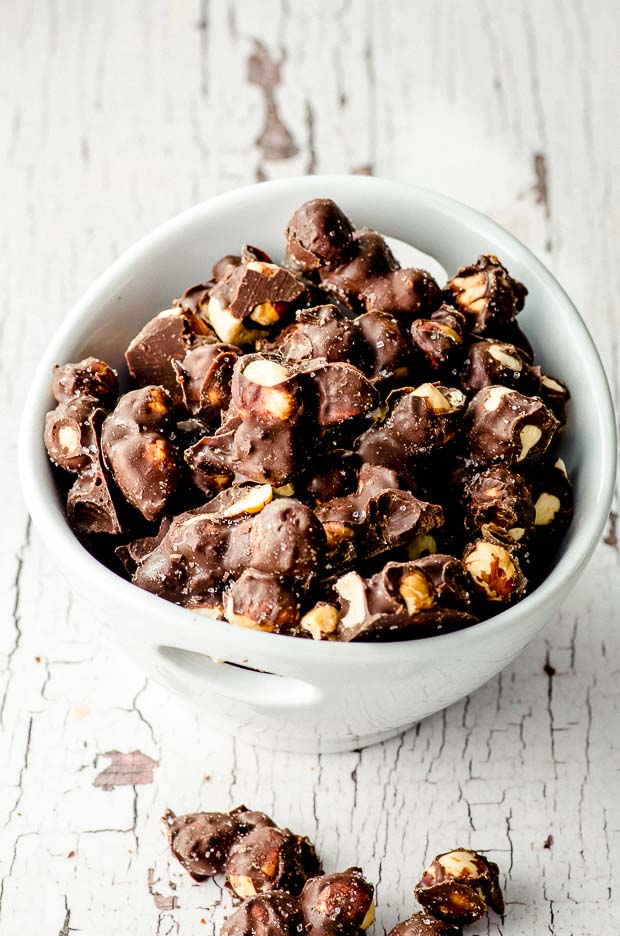

Hazelnut Chocolate

This is how you do it
Roast the hazelnuts and let it cool down
Melt the chocolate and put the hazelnuts into it.
Combine well and put small amount onto the baking sheet and let it rest
Ingredient
- 100 gr dark chocolate
- 185 gr hazelnut
Tips
- Roast the hazelnuts well
- Dont put the chocolate into hot hazelnuts. They need to coll down
- Dont let the chocolate cool down. It will end up with funny colors Unless that's what you want